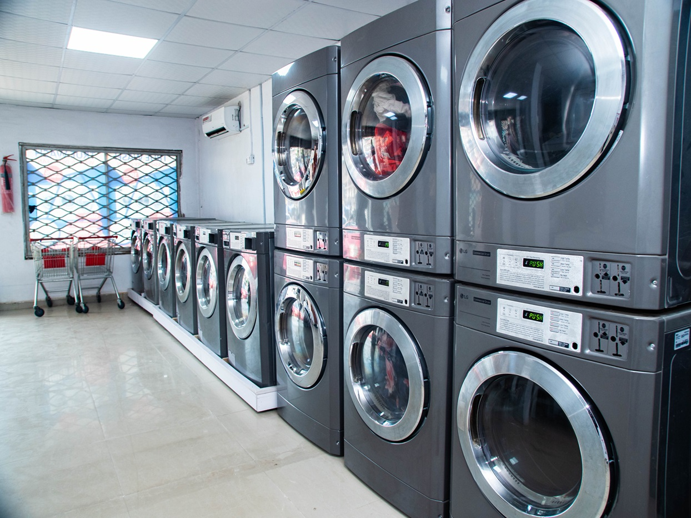

.png)
.png)
Table of Contents
- Transform Your Laundry Routine with Professional Clothes Washer Technology
- What Makes Our Clothes Washer Services Stand Out
- Why Akoka Residents Choose TrueWash Laundromart
- Convenience That Fits Your Lagos Lifestyle
- Flexible Hours
- Professional Care For Every Fabric Type
- Stain Removal Expertise
- Fabric Protection
- The TrueWash Advantage: More Than Just a Clothes Washer Services
Are you tired of spending hours doing laundry at home? Looking for a reliable clothes service washer in Akoka, Lagos that delivers exceptional results everytime?TrueWash laundromat is here to revolutionize with sate-of-the art equipment and unmatched customer service.
Transform Your Laundry Routine with Professional Clothes Washer Technology
At TrueWash Laundromart we understand that your time is precious. That's why we've invested in the latest clothes washer technology to ensure your garments recieve the care they deserve. Our industrial-grade washing machines are designed to handle everything from delicate fabrics to heavy-duty items, delivering superior cleaning results that home washers simply can't match.
What Makes Our Clothes Washer Services Stand Out?
Advanced Washing Technology. Our commercial-grade clothes washer units use precise water temperature control and specialized wash cycles that protects your fabrics while removing even the toughest stains. Unlike traditional home washers, our machines are calibrated to deliver consistent results every single time.
Multiple Load Sizes
Whether you are washing a single outfit or a week's worth of laundry, our various clothes washer sizes accomodate your needs. From compact loads to family-sized washing, we have the perfect machine for every customer.
Eco Friendly Operations
Our morden clothes washer systems are designed to minimize water and energy consumption while maximizing cleaning power. This means ypu get sparkling clothes while supporting environmental stability.
Why Akoka Residents Choose TrueWash Laundromat?
Convenience That Fits Your Lagos Lifestyle

Living in Lagos means dealing with unpredictable water supply and water shortages. Don't let these challanges affect your laundry routine. Our clothes washer faciity operates with reliable power backup and consistent water supply ensuring your laundry gets done regardless of external conditions.
Strategic Location
LOcated in the heart of Akoka, we're easily accessible wether you are a student at the University of lagos, a busy professional, or a local resident. Our location makes it convenient to drop youe laundry wetger on your way to work or school.
Flexible Hours
We understand that Lagos work doesn't follow the 9-to-5 schedule. That's why our clothes washer services are avialable extended hours, including weekends, to accomodate your busy lifestyle.
Professional Care for Every Farbric
Our experienced staffs knows how to handle different farbric type using the appropirate clothes washer settings. From your favorite cotton shirts to delicate silk blouses, we ensure each item recieves the specializes care it needs.

Stain Removal Expertise
Tough stains from Lagos traffic, food, or work related don't stand a chance against our pre-treatment processes and powerful clothes washer technology. We tackle everything from palm oil stains to mud and sweat marks. You may also read www.fabriccareinstitute.com/fabric-care-basics
Fabric Protection
Our professional clothes washer units are equipped with gentle cycles that protect your clothes from damage while ensuring thorough cleaning. Say goodbye to shrinkage, fading, and fabric wear.
The Truewash Advantage: More Than Just a Clothes Washer Service
Complete Laundry Solutions
- While our professional clothes washer services form the foundation of what we do, we offer a complete laundry experience:
- Washing and Drying: Our state-of-the-art dryers complement our clothes washer services for complete laundry solutions
- Ironing and Pressing: Professional finishing services that give your clothes that crisp, fresh look
- Folding and Packaging: Clothes returned neatly folded and packaged for your convenience
Affordable Pricing for Every Budget
Quality clothes washer services don’t have to break the bank. Our competitive pricing structure ensures that professional laundry care is accessible to everyone in Akoka. We offer various packages to suit different needs and budgets.
- Student Discounts: Special rates for university students who need reliable clothes washer services without the premium price tag.
- Bulk Discounts :Regular customers and families enjoy significant savings on our **clothes washer** services.
Customer Success Stories
I’ve been using Truewash’s clothes washer services for six months now, and I’m amazed at the difference. My white shirts have never been whiter, and my colored clothes maintain their vibrancy. The convenience factor is incredible – I drop off my laundry on Monday and pick it up perfectly clean and pressed on Wednesday. – Adebayo, University of Lagos Student
”As a busy mother of three, finding time for laundry was always a challenge. Truewash’s professional clothes washer service has been a game-changer. The quality is outstanding, and the staff is so helpful. I recommend them to all my friends in Akoka.-Mrs. Folake Ogundimu, Local Resident
Ready to Experience the Truewash Difference?
Don’t let laundry consume your valuable time. Our professional clothes washer services are designed to give you back your weekends and ensure your clothes always look their best.
Get Started Today
Visit Our Facility: Find us at 5/7 finbarrs college road Akoka, Lagos. Our friendly staff will show you our clothes washer equipment and explain our services. you can also reach us through truewashng.com
Call Us-Speak with our team at {08037} to schedule your first clothes washer service or ask any questions about our process.
What to Expect on Your First Visit
When you choose Truewash for your clothes washer needs, here’s what you can expect:
- Customized Treatment: Items are sorted and treated according to fabric type and soil level
- Professional Washing: Your clothes go through our advanced clothes washer process
- Quality Check : Every item is inspected before packaging
- Convenient Pickup : Collect your fresh, clean laundry at your convenience. Visit Pick Up Services
Join the Truewash Family

Hundreds of satisfied customers in Akoka trust Truewash for their clothes washer needs. Join our growing family of customers who’ve discovered the convenience, quality, and reliability of professional laundry services.
Follow Us: Stay updated on special offers and laundry tips by following us on social media.
Refer Friends: Existing customers receive rewards for referring new clients to our clothes washer services.
Your clothes deserve the best care possible. Experience the difference that professional clothes washer services can make in your life. Visit Truewash Laundromat in Akoka today and discover why we’re Lagos’s trusted name in laundry care.
Contact Truewash Laundromat today to schedule your first clothes washer service and take the first step toward hassle-free laundry care.
Complete Laundry Solutions
- While our professional clothes washer services form the foundation of what we do, we offer a complete laundry experience:
- Washing and Drying: Our state-of-the-art dryers complement our clothes washer services for complete laundry solutions
- Ironing and Pressing: Professional finishing services that give your clothes that crisp, fresh look
- Folding and Packaging: Clothes returned neatly folded and packaged for your convenience
Affordable Pricing for Every Budget
Quality clothes washer services don’t have to break the bank. Our competitive pricing structure ensures that professional laundry care is accessible to everyone in Akoka. We offer various packages to suit different needs and budgets.
- Student Discounts: Special rates for university students who need reliable clothes washer services without the premium price tag.
- Bulk Discounts :Regular customers and families enjoy significant savings on our **clothes washer** services.
Customer Success Stories
I’ve been using Truewash’s clothes washer services for six months now, and I’m amazed at the difference. My white shirts have never been whiter, and my colored clothes maintain their vibrancy. The convenience factor is incredible – I drop off my laundry on Monday and pick it up perfectly clean and pressed on Wednesday. – Adebayo, University of Lagos Student
”As a busy mother of three, finding time for laundry was always a challenge. Truewash’s professional clothes washer service has been a game-changer. The quality is outstanding, and the staff is so helpful. I recommend them to all my friends in Akoka.-Mrs. Folake Ogundimu, Local Resident
Ready to Experience the Truewash Difference?
Don’t let laundry consume your valuable time. Our professional clothes washer services are designed to give you back your weekends and ensure your clothes always look their best.
Get Started Today
Visit Our Facility: Find us at 5/7 finbarrs college road Akoka, Lagos. Our friendly staff will show you our clothes washer equipment and explain our services. you can also reach us through truewashng.com
Call Us-Speak with our team at {08037} to schedule your first clothes washer service or ask any questions about our process.
What to Expect on Your First Visit
When you choose Truewash for your clothes washer needs, here’s what you can expect:
- Customized Treatment: Items are sorted and treated according to fabric type and soil level
- Professional Washing: Your clothes go through our advanced clothes washer process
- Quality Check : Every item is inspected before packaging
- Convenient Pickup : Collect your fresh, clean laundry at your convenience. Visit Pick Up Services
Join the Truewash Family
Hundreds of satisfied customers in Akoka trust Truewash for their clothes washer needs. Join our growing family of customers who’ve discovered the convenience, quality, and reliability of professional laundry services. Follow Us: Stay updated on special offers and laundry tips by following us on social media. Refer Friends: Existing customers receive rewards for referring new clients to our clothes washer services. Your clothes deserve the best care possible. Experience the difference that professional clothes washer services can make in your life. Visit Truewash Laundromat in Akoka today and discover why we’re Lagos’s trusted name in laundry care. Contact Truewash Laundromat today to schedule your first clothes washer service and take the first step toward hassle-free laundry care.
CONTINUE READING
Related Posts
.jpg)
Garment Steamer Benefits: 7 Powerful Reasons Why Your Delicate Clothes Need Professional Steaming
1377 words 7.2 min read
10 Laundry Mistakes To Avoid And How We Fix Them
929 words 4.8 min read
Introduction Let's face it: laundry seems simple until it goes [...]
.jpg)
Laundromart Near Me Lagos - Fast, clean, And Affordable Service
322 words 1.8 min read
Laundromat near me Lagos - Enjoy fast, clean, and affordable [...]